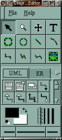
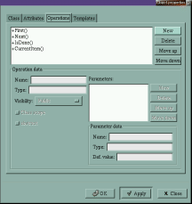
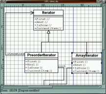

Screenshots |
The main window |
The properties dialog for an UML class |
The workspace |
|  |  |  |
Click on the eye icon to see larger versions of the different windows. Here is a full screen screenshot of Dia in action too.